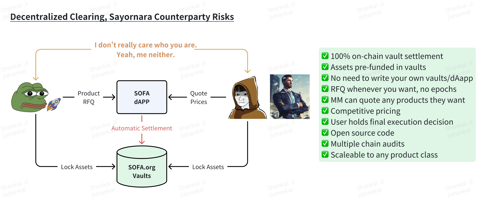
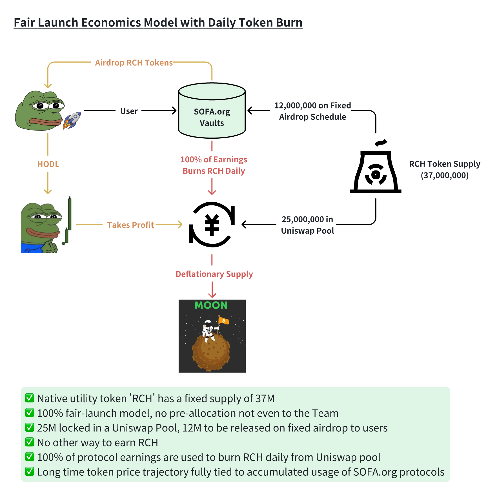
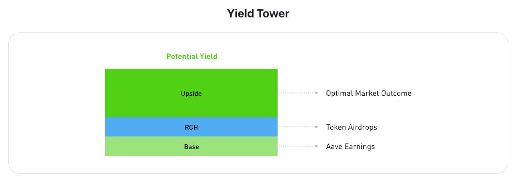

SOFA.org Overview
What is SOFA.org?
SOFA.org is a decentralized, non-profit organization focused on advancing the DeFi ecosystem. Our modus operandi is to promote the highest DeFi standards, support high-quality projects, and promote adoption of blockchain technologies across mainstream finance.
SOFA.org will operate as a DAO concentrating on three key areas in DeFi
📚 Education & Tech Advancement: Innovate and share knowledge across participants.
🔬 Research & Innovation: Develop new DeFi solutions with tangible value-add.
🛡 Industry Standards: Establish best practices for protocol safety and capital efficiency.
🗳 $SOFA Governance Token
$SOFA is the governance token that allows holders to participate in the decision-making process for the SOFA.org ecosystem.
Holders of $SOFA have voting rights on key proposals, helping to shape the future of our burgeoning ecosystem. This token encourages community ownerhsip and ensures that the community has a direct say in the platform’s development and management.
SOFA.org has amassed an all-star cast of founding members and project partners to jump-start our protocol and TVL growth right from the get-go.
DAO Members and Supporting Members as of Early May 2024
What is SOFA.org building?
SOFA.org will build and support protocol projects that will bolster DeFi's growth as an integral infrastructure of conventional finance.
The inaugural project will focus on providing a transparent, scalable, and decentralized clearing solution handling crypto structured products on-chain. Users will be able to purchase a variety of structured products from a limitless number of market makers on our open dAPP to earn attractive yields, with executed transactions automatically settled via our standardized vaults to remove all counterparty risks.
Furthermore, platform users are directly rewarded through the native utility token $RCH, a fixed supply deflationary token which can only be earned via protocol usage. Finally, to ensure incentive-alignment, all protocol earnings will be recycled to burn $RCH tokens daily, decreasing total float and accruing all profits to our user-token holders over the long-run.

🤑 $RCH Utility Token
$RCH is the core utility token within the SOFA ecosystem. It is designed to reward users for transacting within the ecosystem and participating in its growth.
$RCH has a total supply of 37 million tokens, with 25 million (~67%) pre-minted and locked in a Uniswap liquidity pool. The remaining 12mm (33%) are earmarked to be airdropped to protocol users and supporters. The long-term deflationary design ensures that the token value appreciates hand-in-hand with rising transaction volumes.
🚀 EARN WITH US

$SOFA tokens can be earned through contributions to the community and participation in governance activities. Users can also burn $RCH to get $SOFA.
Remember, users earn $RCH through daily airdrops based on their transaction volume, allowing active users to earn substantial airdrops, on top of the potential yield they receive from purchasing structured products.**

🗣 Broker Referral Program (dApp)
We recognize that there is strength in numbers, so we have designed a broker referral reward mechanism aimed at enabling the accessibility and infrastructure of the SOFA ecosystem.
Participating brokers who build and enable end-user access to the underlying SOFA protocols, such as through the development of supporting dAPPs, will be entitled to receive 5% of the end user's airdrop rewards, paid directly from the protocol.
Come join the SOFA.org Community today!
Twitter | Discord | Telegram | Medium | Contact us